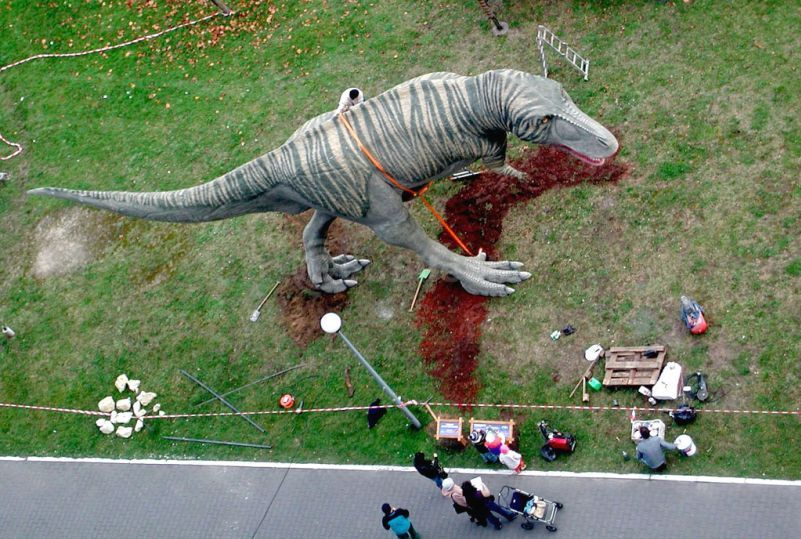

GeoSilesia
GeoŚląsk
Położenie
Budowa geologiczna
Rzeźba terenu
Geostanowiska
Galeria
Aktualności
Słownik
O Nas
Galeria
krainy geograficzne
minerały i skały
dziedzictwo poprzemysłowe
scieżki dydaktyczne
wydarzenia
wszystkie
Wyżyna Częstochowska cz. 1
Wyżyna Częstochowska cz. 2
Minerały województwa Śląskiego
Cieszynity, pikryty i syenity
Skały płaszczowiny magurskiej
Kamień w architekturze - Gliwice
Kamień w architekturze - TUiTAM
Głazy narzutowe
Park Tradycji w Siemianowicach
Kopalnia Ćwiczebna w Dąbrowie Górniczej
Skansen Górniczy Królowa Luiza w Zabrzu
Zabytkowa KWK „Ignacy” w Rybniku
Dziedzictwo poprzemysłowe - TUiTAM
Rudniki - Kamieniołom Lipówka
Hutki-Kanki - Po rezerwacie Góra Chełm
Smoleń - Po Dolinie Wodącej
10 pytań o Ziemię
Trasa turystyczna w Jaskini Głębokiej

Operacja Tyranozaur
↑